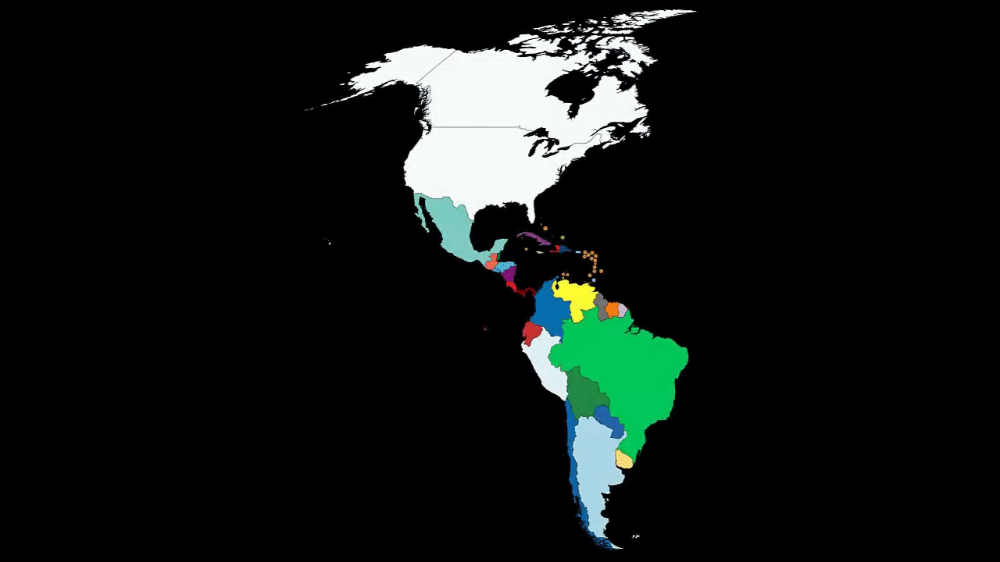

América es el segundo continente más grande de la Tierra, después de Asia. Ocupa gran parte del hemisferio occidental del planeta. Se extiende desde el océano Ártico por el norte hasta las islas Diego Ramírez por el sur, en la confluencia de los océanos Atlántico y Pacífico, los cuales a su vez delimitan al continente por el este y el oeste, respectivamente. Con una superficie de más de 43 316 000 km², es la segunda masa de tierra más grande del globo (la primera es la parte no insular de Eurafrasia), cubriendo el 8 % de la superficie total del planeta y el 28.4 % de la tierra emergida, y además concentrando cerca del 12.5 % de la población humana. Las mayores aglomeraciones urbanas de América son Ciudad de México, Nueva York, São Paulo, Los Ángeles, Río de Janeiro, Buenos Aires, Lima y Bogotá
Debido a su gran tamaño y sus características geográficas, en algunas culturas, América se divide tradicionalmente en América del Norte, América Central, y América del Sur. Algunos geógrafos consideran a América Central como una subregión dentro de América del Norte. Atendiendo a sus características culturales, se distinguen América Anglosajona y América Latina. América fue poblada desde el Asia oriental y evolucionó durante miles de años sin tener contacto con otros continentes, estableciéndose diversas culturas a lo largo de todo su territorio y generando sus propias revoluciones neolíticas. A partir de la llegada de los españoles en 1492, el continente estableció un intercambio social y ecológico significativo con Eurafrasia.
Generalmente se acepta que el nombre deriva del navegante y cosmógrafo florentino Amerigo Vespucci (1454-1512), para referirse a las costas de la actual Sudamérica, consideradas como un Nuevo Mundo desconocido por los antiguos. Vespucio, navegante de origen florentino que realizó algún viaje al servicio de España, fue probablemente el primer europeo en sugerir que esas tierras eran en realidad un continente nuevo y no parte de Asia como pensaba Cristóbal Colón. Con el tiempo, este topónimo se aplicó al resto del continente. La primera vez que se utilizó el nombre «América» en Europa para designar las tierras a las que llegó Colón fue en un tratado titulado Cosmographiae Introductio, redactado por Mathias Ringmann10 y otros para acompañar al planisferio mural Universalis Cosmographia, dibujado por el cartógrafo alemán Martín Waldseemüller en Saint-Dié-des-Vosges (noreste de Francia), en dicho mapa el nombre «América» aparecía sobre América del Sur, todavía separada de América del Norte por un estrecho paso interoceánico. 20 3 4 3 4 2 90 2 8 2
El continente aparecía rodeado por el mar y perfectamente diferenciado de Asia, con banderas castellanas y leyendas que indicaban que aquellas tierras habían sido descubiertas per mandatum regis Castelle. En el texto se corregían las concepciones ptolemaicas incorporando los descubrimientos de españoles y portugueses, y titulaba al nuevo continente América en honor a Américo Vespucio a quien tanto el tratado como el mapa atribuían el descubrimiento. Siguiendo la línea de los otros continentes con nombre femenino, se latinizó el nombre del explorador y se feminizó, resultando América.11Gracias al desarrollo de la imprenta, las denominaciones de Waldseemüller se divulgaron rápidamente en los círculos científicos de Europa. Mapa de América por el cartógrafo Jodocus Hondius, realizado c. 1640. Para referirse a las islas y toda la masa continental del hemisferio occidental, el geógrafo de origen flamenco Gerardus Mercator usó la misma palabra América por primera vez en sus trabajos cartográficos con un mapa del mundo editado en el año 1538. Por otro lado, la Monarquía Española denominó jurídicamente a sus posesiones americanas como Reinos castellanos de Indias. La Corona británica las llamó Indias Occidentales.
En cuanto al nombre Américo, en italiano Amerigo, es una variante del nombre germánico Emmerich,15 de etimología incierta. Su segundo lexema ric, «poder», es común a otros nombres y no plantea dudas: El primer elemento puede ser ermen «entero», en este caso sería una forma de Ermenrico, «el poderoso» o bien, amal «trabajo», una variante de Amalarico, «poderoso en su trabajo» o, incluso heim, «hogar», «patria», en cuyo caso es otra forma del nombre Enrique, «el jefe del hogar» (o «de la patria»).Se han propuesto otros orígenes para el nombre América, pero carecen de evidencia y resultan improbables desde el punto de vista histórico o filológico. Las dos hipótesis más difundidas son que el nombre proviene de un mercader de Bristol, Richard Ap Meryk, o Amerike, es decir «el hijo de Meurig», quien habría financiado el viaje de Juan Caboto, a Terranova en 1497181920 o de una región llamada Amerrique, originalmente Amerristiquiqque «lugar de viento» en la lengua mayense de la región, ubicada en el interior de la actual Nicaragua,21 la cual poseía grandes recursos de oro que habrían descubierto tanto Colón como Américo Vespucio, y que incluso este último habría cambiado su nombre en honor a dicha zona ya que dicho nombre no figura en ningún registro antes del año 1500.
La creencia de que Richard Amerike fue uno de los principales financiadores del viaje de Caboto se difundió desde finales del siglo xx, sin embargo no existe ninguna evidencia en tal sentido. Por el contrario, la investigación actual no posee un solo dato que lo relacione con el viaje o el barco de Caboto.23242526 En cuanto al nombre Amerrisque, parece ser posterior al mapa de Waldseemüller, no habiendo registro del mismo hasta el siglo xix. Los indígenas americanos carecieron de un nombre para el continente, modernamente se han reivindicado antiguos nombres nativos como denominaciones autóctonas, entre ellos el mencionado Amerrisque en lengua quiché22 Abya Yala, usado por la etnia Kuna27 y Cem Ānáhuac por los aztecas. Desde el siglo xviii en la literatura y la prensa de habla inglesa, comenzó a ser usado para designar a las Trece Colonias británicas de América y, desde 1776, a los Estados Unidos de América. En inglés es frecuente distinguir entre America, la mencionada nación estadounidense, y Americas (plural) el continente en su conjunto. Este uso incorrecto29 se ha difundido desde el siglo xx a otras lenguas e incluso a publicaciones en español.
Hasta las últimas décadas predominaba la teoría del poblamiento tardío que sostiene que el ser humano llegó a América desde Siberia hace unos 12-14 mil años ingresando a través del Puente de Beringia durante las glaciaciones wurmienses. Sin embargo, más recientemente científicos de distintas áreas han cuestionado cada vez con mayores evidencias la teoría anterior dando forma a una nueva teoría del poblamiento temprano que sostiene no solo un poblamiento muy anterior (probablemente entre 20 000 y 50 000 años a. C.), sino la utilización de otras rutas alternativas a Beringia para ingresar desde Siberia, Mongolia34 e incluso otros lugares de origen. En América se produjeron dos revoluciones neolíticas independientes de las sucedidas en África y Asia; una en Mesoamérica alrededor del año 8000 a. C.,35 y otra en la región andina de Sudamérica en el 3500 a. C.36 Entre el 4000 y el 3000 a. C. se formaron los grandes grupos lingüísticos indoamericanos.
Hasta las últimas décadas predominaba la teoría del poblamiento tardío que sostiene que el ser humano llegó a América desde Siberia hace unos 12-14 mil años ingresando a través del Puente de Beringia durante las glaciaciones wurmienses. Sin embargo, más recientemente científicos de distintas áreas han cuestionado cada vez con mayores evidencias la teoría anterior dando forma a una nueva teoría del poblamiento temprano que sostiene no solo un poblamiento muy anterior (probablemente entre 20 000 y 50 000 años a. C.), sino la utilización de otras rutas alternativas a Beringia para ingresar desde Siberia, Mongolia34 e incluso otros lugares de origen. En América se produjeron dos revoluciones neolíticas independientes de las sucedidas en África y Asia; una en Mesoamérica alrededor del año 8000 a. C.,35 y otra en la región andina de Sudamérica en el 3500 a. C.36 Entre el 4000 y el 3000 a. C. se formaron los grandes grupos lingüísticos indoamericanos.
Hay que señalar también que la conquista europea fue rechazada en diversas partes del continente. Varios pueblos originarios resistieron exitosamente las invasiones europeas sobre vastos territorios, y mantuvieron el dominio sobre ellos hasta fines del siglo xix. La Araucanía, la Patagonia, la llanura pampeana, el Mato Grosso, la región Amazónica y las grandes praderas del oeste norteamericano, permanecieron bajo el dominio de naciones como la Mapuche, Uros, Het, Ranquel, Wichí, qom, amazónicos, algonquinos, Hopi, Comanche, Inuit, etc. Las enfermedades introducidas por los europeos, como la viruela, causaron la mortandad masiva de las poblaciones originarias y un colapso demográfico que según algunos investigadores superó el 90 % de la población total.
En 1804, los esclavos de origen africano de Haití se sublevaron contra los colonos franceses, declarando la independencia de este país y creando el primer estado moderno con gobernantes afroamericanos. A partir de 1809,40 los pueblos bajo dominio de España llevaron adelante una Guerra de Independencia Hispanoamericana, de alcance continental, que llevó, después de complejos procesos, al surgimiento de varias naciones: Argentina, Bolivia, Colombia, Costa Rica, Panamá, Chile, Ecuador, El Salvador, Guatemala, Honduras, México, Nicaragua, Paraguay, Perú, Uruguay y Venezuela. En 1844 y 1898 el proceso se completaría con la independencia de República Dominicana y Cuba, respectivamente. En 1816, se conformó un enorme estado independiente sudamericano, denominado Gran Colombia, y que abarcó los territorios de los actuales Panamá, Colombia, Venezuela y Ecuador y zonas de Brasil, Costa Rica, Guyana, Honduras, Nicaragua y Perú. La República se disolvió en 1830.